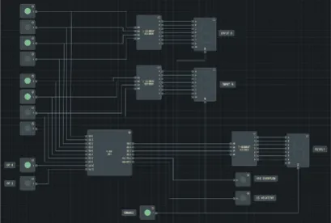
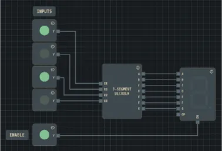
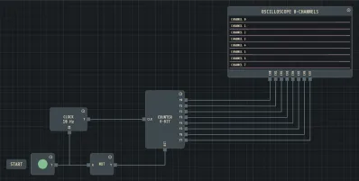
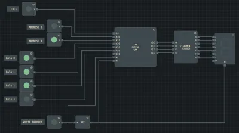
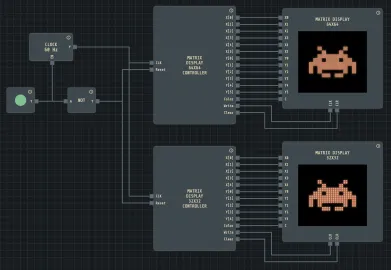
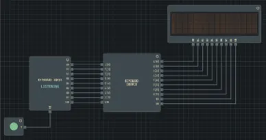
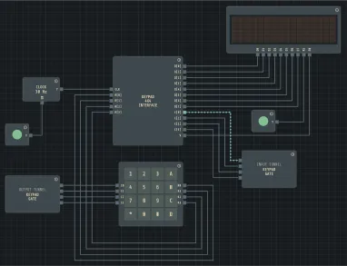
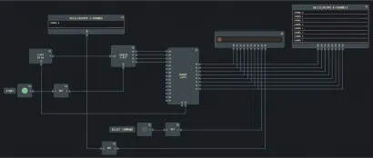

Logic Gates
AND, OR, NOT, NAND, NOR, XOR, XNOR — all with configurable input counts. Wire them together and simulate instantly.
Gate Lab is a free, browser-based digital circuit simulator. Build and test anything from basic logic gates to custom CPUs — with real-time simulation and live collaboration.
Capabilities
A comprehensive toolkit for students, engineers, and educators — all in your browser.
AND, OR, NOT, NAND, NOR, XOR, XNOR — all with configurable input counts. Wire them together and simulate instantly.
D, T, SR, JK flip-flops with CLK and RST. 4, 8, and 16-bit registers with load, increment, and clear controls.
128×4 and 128×8 RAM with a built-in memory editor. 2, 4, and 8-bit synchronous counters with reset.
7-segment display and decoder, character LCD (1×16, 2×16, 4×16), and matrix display up to 64×64 pixels.
1, 2, 4, or 8-channel oscilloscope. Attach to any wire and view HIGH/LOW waveform history over time.
Define combinational logic by filling in a table — up to 8 inputs and 8 outputs. No scripting required.
Write combinational or clocked logic in the built-in scripting language. Supports internal state, clock events, and custom pins.
Route signals across the canvas without wires using tunnels. Multi-bit bus components handle parallel data paths.
Save workspaces as .lgs files. Export circuits as PNG
or SVG. Import memory contents with .lgm files.
Workflow
From a blank canvas to a running simulation in minutes — no setup required.
01
Open the component panel and drag any gate, flip-flop, memory block, or display onto the infinite canvas. Resize, rotate, and label each part freely. Every component updates live as you work.
02
Click any output pin and drag to an input pin to draw a wire. Wires auto-route around components. Multi-bit buses carry parallel signals, and signal tunnels link distant parts of a large circuit without clutter.
03
Toggle inputs, drive a clock, and watch signal states propagate in real time. Attach an oscilloscope to any wire to record waveforms over multiple clock cycles. Export the circuit or share a live session link.
Who uses it
Verify homework problems, explore truth tables, and build complete processor designs for coursework. Gate Lab's visual feedback makes abstract Boolean algebra tangible. It is a free Logisim alternative that runs entirely in the browser — no lab installation needed.
Use Lab Hub to create courses, upload assignments, and collect student submissions — all inside Gate Lab. Share a join code and students can open the assigned assignment directly in the simulator. Use real-time collaboration to walk through a design live in class. No external grading tools required.
Prototype combinational and sequential logic before committing to hardware. Use programmable custom components to test novel architectures — ALUs, RISC CPU control units, custom memory controllers — and validate logic correctness before moving to an FPGA or PCB.
Examples

4-Bit ALU
Arithmetic logic unit

7-Segment Display
BCD decoder and display driver

8-Bit Counter
Synchronous binary counter

Custom 4×4 RAM
Addressable memory array

Matrix Display
Space invader dot-matrix

Keyboard Driver
PS/2 keyboard interface

4×4 Keypad Driver
Matrix keypad scanner

LCD Hello World
Character LCD controller
Help
Gate Lab is a free, browser-based digital circuit simulator. You can drag and drop logic gates, connect wires, and watch signals propagate in real time — no installation required. It covers everything from basic Boolean logic to complex designs like ALUs, CPUs, and custom memory systems, making it ideal for students, educators, and engineers.
No. Gate Lab runs entirely in your web browser — just open the page and start building. It works in Chrome, Firefox, Edge, and Safari on desktop. No plugins, no downloads, no sign-up.
Over 40 component types across several categories:
Custom components use Gate Lab's built-in scripting language to define any logic you need. You declare input and output pins, then write combinational logic or clocked sequential behavior with internal state variables. This lets you build anything beyond the standard library — from a custom ALU operation to a complete processor control unit — and reuse it as a component anywhere in your circuit.
Lab Hub is a built-in course management system. Instructors
create courses and upload .lgs lab files as
assignments. Students join a course using a join code, open the
assigned lab directly in the simulator, and submit their
completed work with one click. Instructors can then open and
review each submission. A free account (email and password) is
required — open
Collaboration → Lab Hub
to get started.
Yes. Gate Lab supports real-time multiplayer collaboration. Share your session link and others can join instantly — no account needed. Everyone can place components, draw wires, and run the simulation together, with each participant's cursor visible to the group.
Yes. Gate Lab includes every primitive you need to build a working processor: multi-bit adders and comparators for the ALU, RAM and ROM for instruction and data memory, registers for the register file and program counter, multiplexers for the data path, and programmable custom components for the control unit. The included sample circuit "4-Bit ALU" is a good starting point — it shows how to combine an adder, a logic unit, and a function-select multiplexer into a single arithmetic unit. From there, add an instruction register, a program counter, and a simple state machine for fetch-decode-execute, and you have a minimal working CPU running inside your browser.